INTACT Studio Tips & Tricks
Go to File
When working in large projects with multiple directories, use the Find shortcut to search for a file by name. This is often easier than manually searching through a project.
- Linux/Windows:
CTRL+SHIFT+Nand start typing the file name. - Mac OS:
COMMAND+SHIFT+Nand start typing the file name.
Auto-Complete helps find the file. 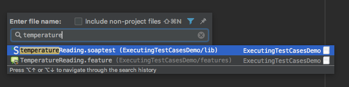
After you find the file, press Enter to go to that file:
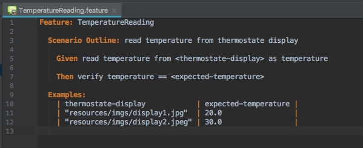
Comment Out Files
If you don’t want certain steps to be available, comment them out by selecting the text and entering the following:
- Linux/Windows:
CTRL+/ - Mac OS:
COMMAND+/
In feature files, # will appear before each commented-out line:
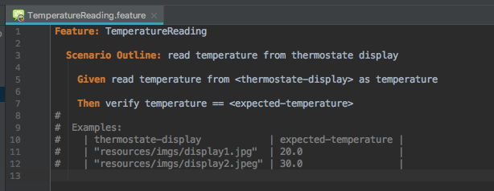
In other files, including configurations, Webtest and Soaptest files, // will appear before each commented out line:
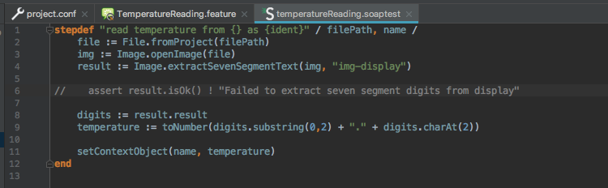
Document Stepdefs
INTACT Studio interprets comments written above stepdefs (those marked with //) as documentation.
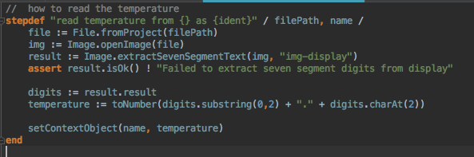
To access the documentation from a Feature File:
- Windows/Linux: Hover over the step and type
CTRL+Q. - Mac OS: Hover over the step and type
CTRL+J+,
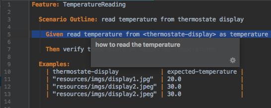
Create To-do Lists
Sometimes we leave a To-do note in our codes. For example, if there is something that needs to be fixed or done in a better way at a later time. We an leave To-do lists by placing TODO after a comment indicator in a Feature File or Stepdef:
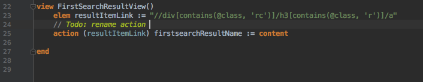
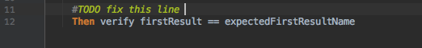
INTACT Studio shows To-dos at the bottom of the application. Click on TODO to see the list of files with To-dos, and click on the triangle icon to expand them:
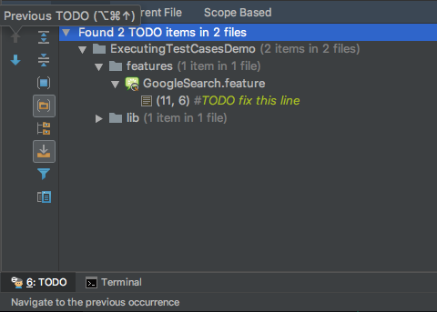
Find Steps
With big projects, we don’t always know which stepdefs we have at our disposal, and need help searching through the project. One option is to search throughout the full project:
- Linux/Windows/Mac OS:
CTRL+SHIFT+Fand start typing parts of the stepdef.
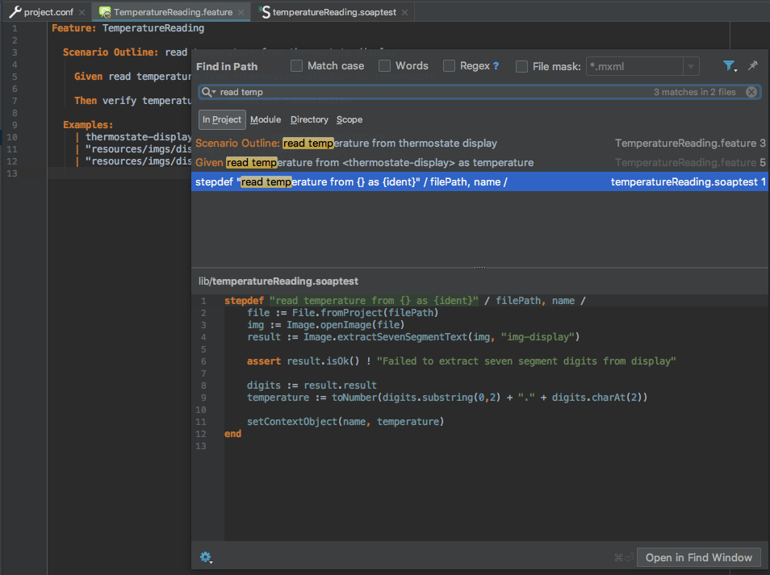
For example, if we know we have a read temperature step, we can start typing read temp and INTACT Studio will list all files in the project that contain those terms.
To search specifically for a stepdef, the fuzzy search shortcut is useful if you know what parts of the steps you want to use:
- Linux/Windows:
CTRL+. - Mac OS:
COMMAND+.
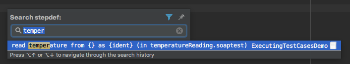
INTACT Studio will search through all matches and find the best possible match.
Note: Many INTACT users prefer to use auto-completion features instead of the search feature.
Auto-Complete
INTACT Studio provides auto-completion functionality to help you find different elements from your test case.
If you start typing the Given keyword and then read temperature from, a list pops up that shows all the steps. The {} symbols refer to arguments that need to be filled in:
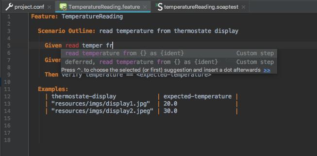
Press Enter to confirm the search. Next, fill in the arguments, which are indicated in the Feature File with ... and press TAB to proceed to the next argument:
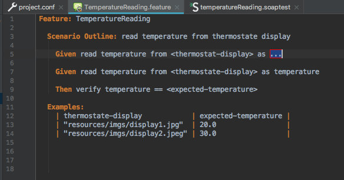
Error Inspections
If you mistype a step definition that doesn’t exist, INTACT Studio will mark it as “unresolvable” in red. Additionally, INTACT Studio displays a red warning icon on the right side of the editor and a red __ to indicate what line the error is on:
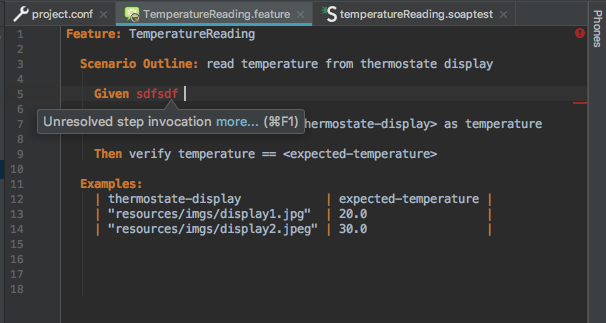
Fix the error: When a green check appears, this means there are no errors:
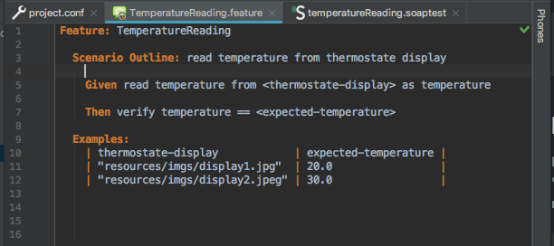
Copy, Paste and Duplicate Lines
Scenario Outlines are useful for when you want to execute multiple versions of a test case with different parameters. For example, our TemperatureReading test checks for different expected temperatures by iterating through different variables.
Scenario Outlines contain Examples tables, which are populated by the variables that INTACT will iterate over. Because most Scenario Outlines contain multiple variables, copying rows and changing the variables saves quite a bit of time.
Simple Copy and Paste
- Place your cursor on the line(s) to copy and type
CTRL+Cfor Windows/Linux orCOMMAND+Cfor Mac OS. Shift+Enterto jump to the next line.CTRL+Vfor Windows/Linux orCOMMAND + Cfor Mac OS to paste.
Duplicate Lines
Select the line(s) you want to copy, then type:
- Windows/Linux:
CTRL+D CTRL+Ydeletes the selected lines.- Mac OS:
COMMAND+D COMMAND+Ydeletes the selected lines.
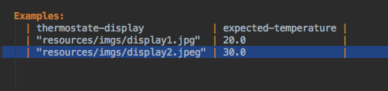
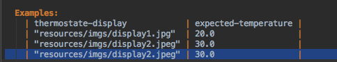
Move Lines Up/Down
Imagine that we want to execute the second Example of our Scenario Outline first. Highlight the line, and then use SHIFT + ALT + up/down arrow:
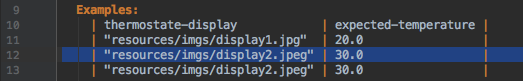
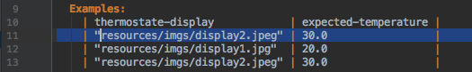
Resolve References
One of the most important INTACT Studio features is that it resolves references to step definitions. For example, the read temperature step in our Feature File is a custom step definition. You can easily find its step definition:
- Windows/Linux: Place cursor over the step +
CTRL+B. - Mac OS: Place cursor over the step +
CTRL+B.
This takes us to the stepdef:
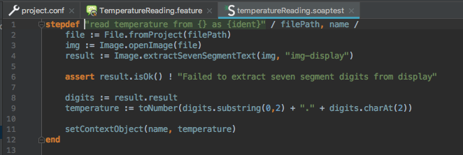
Alternately, hovering over stepdef and using the CTRL + B/COMMAND + B shortcut will bring you to the step in its Feature File.
Reformat Code
We’re going to switch to a Webtest file for the rest of this article to demonstrate some additional functionality, including Webtest-specific functionality.
As you can see, the one of the stepdefs is badly formatted:
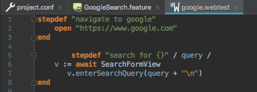
We can easily reformat it:
- Windows/Linux:
CTRL+ALT+L - Mac OS:
COMMAND+ALT+L
Now our stepdefs are properly formatted:
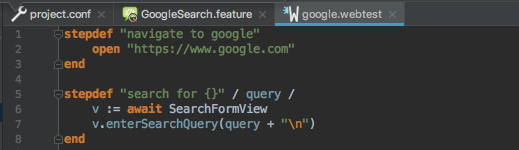
Highlight References
Earlier we mentioned step definition references. These also work inside of Soaptest and Webtest files. Highlighted references belong together. This is useful to find different parts of your code that are linked together, especially in large files:
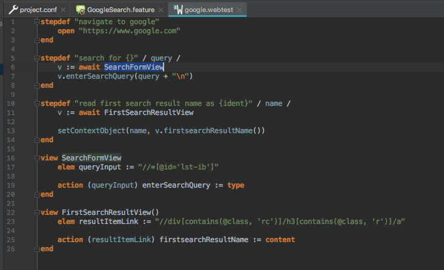
In the example above, highlighting the SearchFormView reference in the Stepdef starting at line 5 also highlights the View called SearchFormView on line 16.
Using CTRL + B on Windows/Linux or COMMAND + B on Mac OS toggles between the references.
Error Inspection in Webtests
Previously we showed an unresolved reference in a Feature File that was marked with red text and a warning icon. Webtest also recognizes unknown Views:
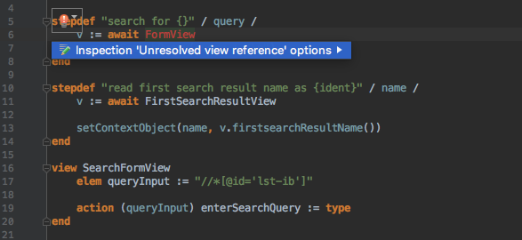
Modify Text - Search and Replace
Usually when we have big projects in there, we need to modify content. For example, giving something a better, more accurate name. One option is to use the search and replace function by typing CTRL + SHIFT + R:
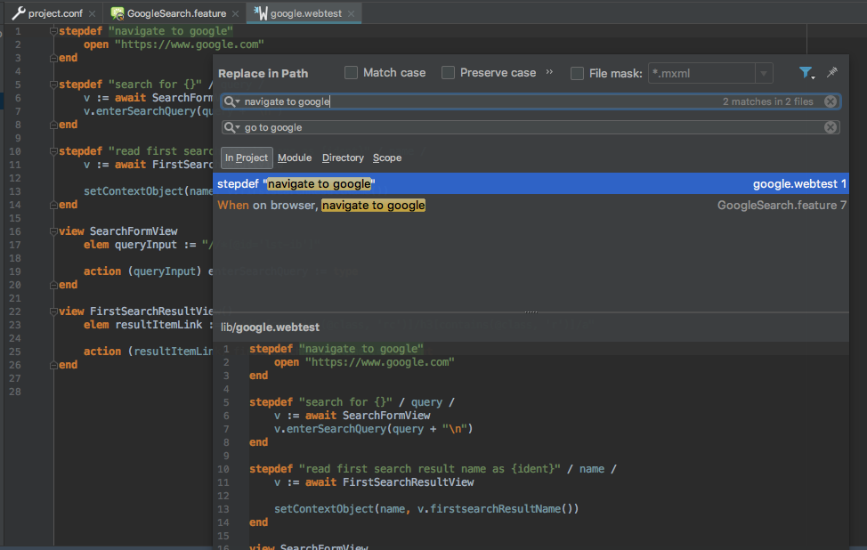
This approach is quite error prone, which is why we recommend rename refactoring.
Modify Text - Rename Refactoring
INTACT Studio supports rename refactoring, which searches all references and usages and renames them accordingly. This also works with local parameters. Highlight what you want to rename across a project and type SHIFT + F6:
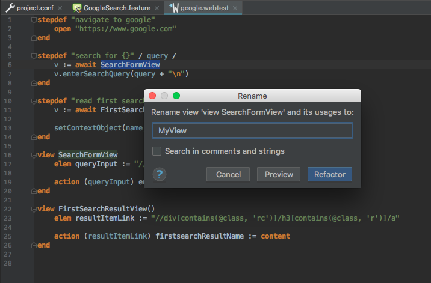
In the example above, we renamed SearchFormView to MyView:
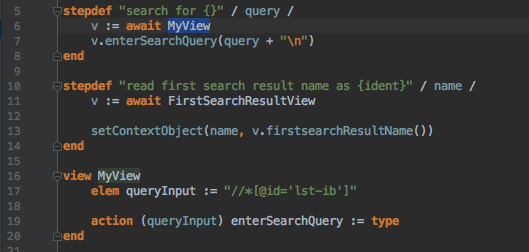
Rename refactoring also works with local parameters. For example, we can rename the parameter query to query2:
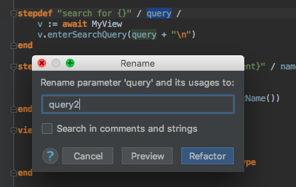
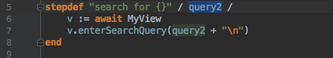
Multiple Cursor
Another frequent use case involves modifying multiple lines at the same time.
Let’s assume we want to have four Actions in our Webtest View. They are all marked as error with a red underline, because we can’t have multiple Actions with the same name:
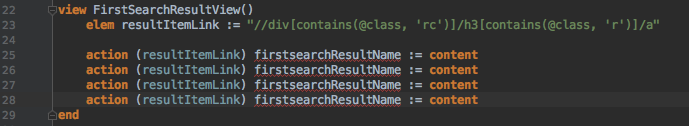
To fix this, we’ll use the multiple cursor so that we can modify all of the Actions by using SHIFT + ALT + CLICK an selecting each line that you want to apply the cursor to.
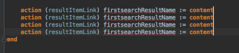
Now we can modify all of the lines at the same time and change content to type:
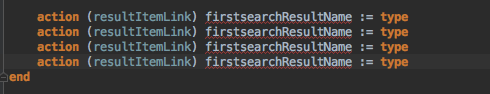
Live Templates
In addition to auto-completion, INTACT Studio provides built-in live templates as well as the ability to create your own templates. For example, if you start typing mod in your Webtest file, INTACT Studio will offer you a suggestion:
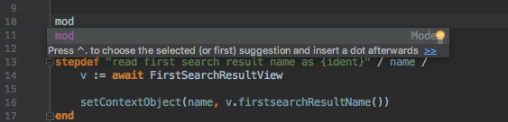
Press the TAB key, and the model template appears:
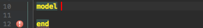
Create Live Templates
If you want to edit or create your own live templates, you can easily do this within INTACT Studio:
- Windows/Linux:
File->Settings->Live Templates->INTACT Legacy Languages. - Mac OS:
IntelliJ Idea->Preferences...->Editor->Live Templates->INTACT Legacy Languages.
To edit an existing template, click on that template. It displays the template’s syntax as well as what file types it’s compatible with. You can also edit the abbreviation or description as well as the template’s variables:
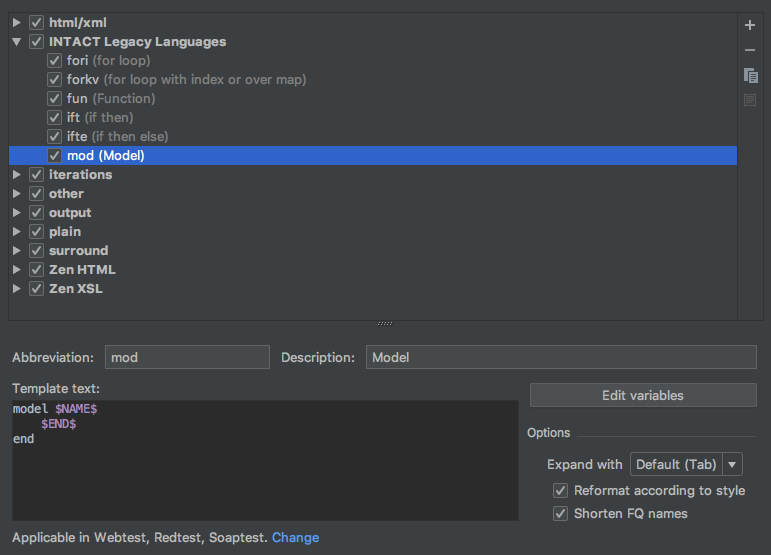
To create your own template, click the + icon on the right side of the window and define your template’s abbreviation, description and variables:
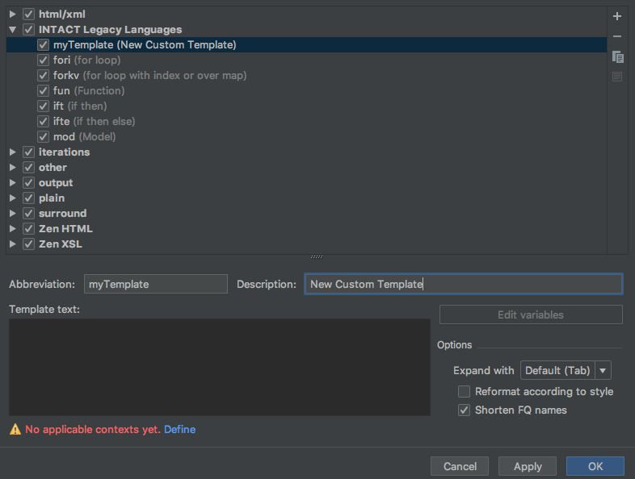
Split Tabs
Finally, some people like to work in parallel – between Feature Files, Webtest and Soaptest files. Right-click one of your project tabs and select Split vertically or Split horizontally depending on your preference:
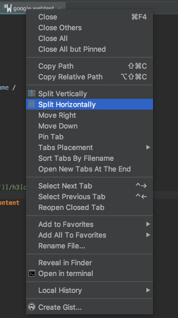
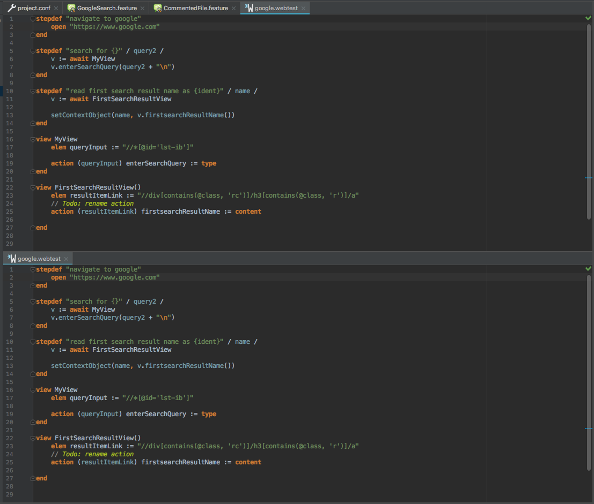
Conclusion
INTACT Studio is full of shortcuts that save you time editing, finding files and steps, looking for errors as well as managing your projects. Follow one of our INTACT Tutorials and try out these shortcuts as you go through the tutorial steps, or use them in your own project. You can also create your own shortcuts via:
- Windows and Linux:
Edit->Settings - Mac OS:
Preferences->Appearance and Behaviour->Keymap->Editor Actions
Want to learn more about the basics of INTACT Studio? Check out our tutorial video on Handling INTACT Studio!